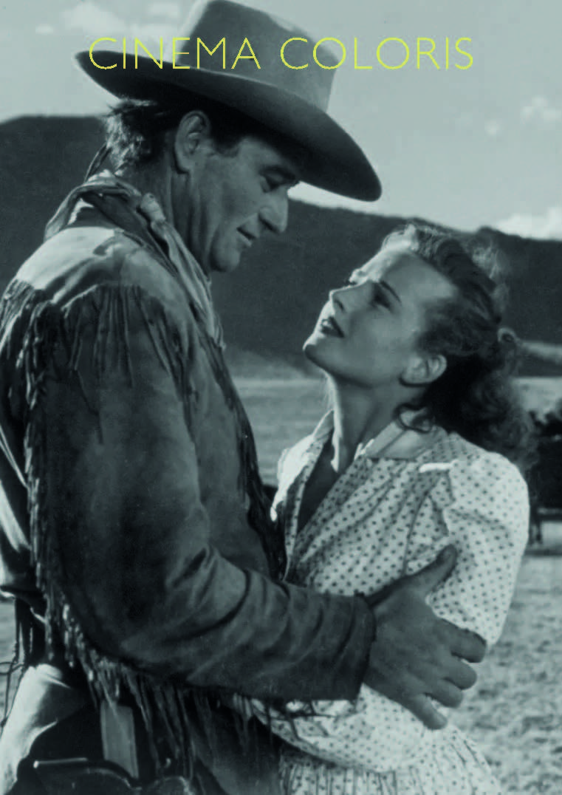

Esta película se erige como una epopeya homérica sobre el nacimiento de los EEUU, el relato de una hazaña imposible para cualquier mortal. Howard Hawks consiguió con Río Rojo (Red River, 1948, EEUU) mostrar una exacta definición con luces y sombras del conocido como destino manifiesto, una doctrina que justifica el expansionismo de EEUU sintiéndose respaldada por una supuesta autoridad divina. Una imagen que representa esta idea a la perfección se da tras la elipsis inicial de 14 años, se encuentran los mismos tres personajes en el mismo lugar y en la misma posición que antes de la elipsis, mientras proyectaban lo que ya era una realidad. Detrás de ellos se encuentra su legado. Al fondo, un incontable número de cabezas de ganado desfilando de lado a lado del cuadro, y a la derecha en segundo término, las endebles cruces de aquellos que defendieron su tierra legítimamente. La imagen de un imperio levantado sobre los restos de sus oponentes.
La relación entre Dunson (John Wayne) y Matt, su joven pupilo, está marcada de inicio a fin por una lucha de poder entre ambos, que se acaba traduciendo en un cambio de roles donde el protagonista se convierte en villano y el secundario emerge como nuevo protagonista. Esta forma de narrar la historia refuerza a la misma. La evolución de esta pugna se ve a lo largo del film a través de cómo se encuadran ambos en relación. Al inicio, cuando Matt es todavía un niño que solicita que su inicial aparezca también reflejada en el emblema del rancho, Dunson le dice que se la tiene que ganar, el niño acepta el reto con ambición y un punto de chulería. En ese momento se da un salto de eje, normalmente empleado para mostrar un cambio de roles dentro de una secuencia, en este caso funciona como anticipo. Hilando con la idea del destino manifiesto, el protagonista inicial de la obra, Dunson se autopercibe como una suerte de dios caprichoso, vengativo y azaroso, esto se refleja a través del uso de la altura, siempre se ubica por encima.
Cuando se preparan para la travesía marcando a todo el ganado (sea de quien sea), Dunson se exhibe sobre su caballo mientras el resto van a pie, Matt se impone mostrando su disconformidad, se sube al caballo, le planta cara. A la mitad del film, a modo de punto medio, cuando mata a tres hombres por revelarse, está de pie, a la altura del resto, Matt se gira y se va, le castiga con la indiferencia, el resto le han perdido el respeto y casi el miedo, “enterrar y leer” dice uno, aludiendo a que sus armas y su biblia (poder de castigo y de perdón), las herramientas que le hacen sentir un dios, ya no surten efecto. Justo después, vemos un plano de Dunson sentado bebiendo, se acerca el joven, de pie, juzgándolo, las tornas han cambiado. Posteriormente, cuando Dunson juzga a unos desertores, él está sentado y el resto de pie (pese hacerles bajar del caballo sigue estando él más abajo), Matt se aleja, deja que lo humillen, acto seguido impondrá orden erigiéndose de facto como el nuevo líder y dejándolo a él atrás. Se muestra un plano a destacar en la despedida entre ambos, el joven se le acerca, quedan los dos encuadrados en un plano americano, Matt fija la mirada en él, él (apoyado sobre su caballo mostrando vulnerabilidad), en cambio, le da la espalda a Matt y a la cámara, la historia ha dado un giro de 180 grados.
Una secuencia que abre en canal psicológicamente a Dunson es la conversación con la amada de su ahijado. El propio espacio, una habitación improvisada entre las paredes de madera de los carros (detrás de ella) y telas para cerrar la estancia (detrás de él), imprime fragilidad a la escena. Dunson en todo momento está visiblemente más bajo cuando comparten plano, se siente débil y apocado, está arrepentido, ella representa un ideal que despreció y perdió en pro de la ambición. Al sentarse ambos alrededor de la mesa, son vinculados con objetos. Él, el alcohol, primero un vaso, luego una botella, dejándose llevar por el odio va a la deriva. Ella, desde una posición más elevada aparece como un faro, justo delante de su cara tiene la lámpara que ilumina la estancia, ella es la luz, al mismo tiempo esparce cartas sobre la mesa, simbolizando una acción de mando, y de controlar el destino a su antojo (al final impartirá paz y orden entre los dos protagonistas). En contraposición a la luz de ella, la penumbra de él se hace patente en un plano que lo muestra de perfil en primer término a la derecha del cuadro. En segundo término, en la parte izquierda superior se encuentra ella, con la cara iluminada en gran medida. La falta de conexión entre las miradas muestra el ensimismamiento de Dunson, seguidamente se muestra un plano casi idéntico donde su cara apunta directamente hacia la botella, abajo. Cuando ella le pregunta por la mujer a la que amó se muestra a él en primer plano, solo y acorralado, han desaparecido los escorzos, presentes hasta ese momento en el plano contraplano. Cuando sacan las pistolas y él muestra que la suya es más grande, es una forma de mostrar cierto poder, al mismo tiempo, quiere protegerla a ella de su fatal destino, y evitar que aquel que consideraba hijo suyo cometa el mismo error que él. El brazalete, un objeto condenado a vagar de propietario en propietario, ha encontrado a alguien merecedora de tal honor y responsabilidad como es lucirlo. Esta idea se refuerza con otro elemento, la lámpara cuya luz simboliza la esperanza y el calor del hogar. Este segundo elemento reaparece con el reencuentro de los dos enamorados.
El uso de ciertos elementos paisajísticos tanto naturales como ríos o artificiales como el ferrocarril para hacer patente una barrera entre la civilización y lo inhóspito, es frecuente en películas que exhiben un pulso entre ambas realidades. Cruzar un río es sinónimo de adentrarse en lo desconocido, un salto de fe, una ardua tarea que tras ser cumplida aún guarda la peor parte. Cruzar las vías del ferrocarril en esta película significa salir de lo salvaje para adentrarse en una civilización desconocida para estos personajes. En otras películas se le da la vuelta al significado, al fin y al cabo es una puerta bidireccional.